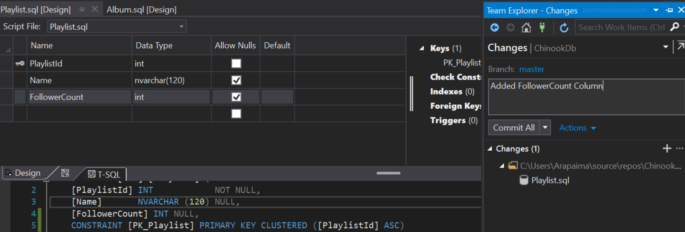
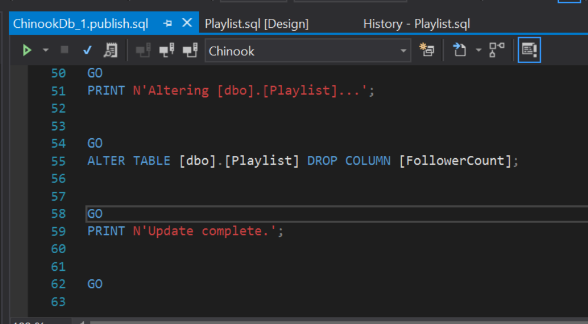
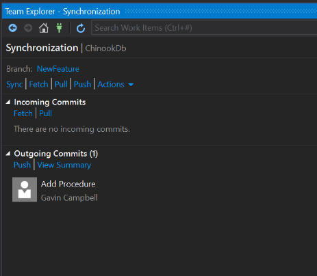
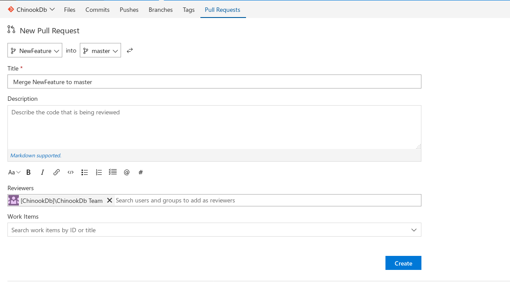
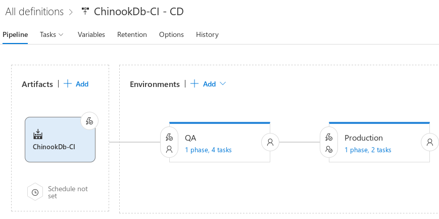
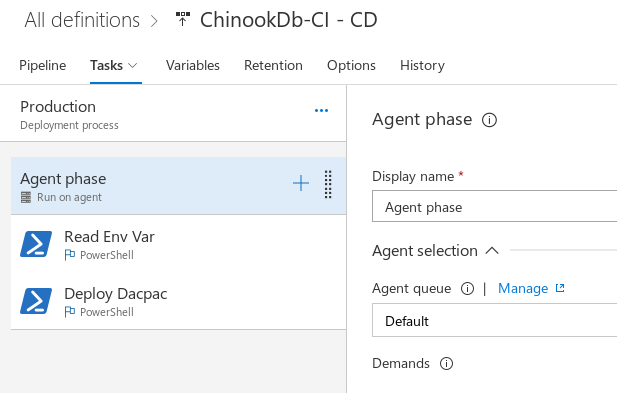

Database Continuous Delivery with SSDT and VSTS
Gavin Campbell
arapaima.uk
Stay in touch
What about Devops?
DevOps is the union of people, process, and products to enable continuous delivery of value to our end users. Donovan Brown
Continuous Delivery
You achieve continuous delivery by continuously integrating the software done by the development team, building executables , and running automated tests on those executables to detect problems. Furthermore you push the executables into increasingly production-like environments to ensure the software will work in production. To do this you use a DeploymentPipeline. Martin Fowler, "Continuous Delivery", martinfowler.com
Continuous Delivery

Continuous Delivery
Grégoire Détrez, original by Jez Humble, Continuous Delivery process diagram, CC BY-SA 4.0{kind=link}
Like a waterfall?
Continuous Delivery
Grégoire Détrez, original by Jez Humble, Continuous Delivery process diagram, CC BY-SA 4.0Continuous Delivery
Grégoire Détrez, original by Jez Humble, Continuous Delivery process diagram, CC BY-SA 4.0Why is this good?
- Reduced Deployment Risk
- Smaller changes
- More practice
- Reduced Cycle time
- Faster time to market
- Faster feedback
- Reduced inventory
Delivering Applications
- Microservices
- Containers
- Serverless Computing
- Scale on Demand
- Feature Switches
- Blue-Green Deployments
- Stateless Applications
- Idempotent Deployments
- Code-Config Separation
- Code-Data Separation
Delivering Databases
- The database is a big bundle of shared state
- Code and Data mixed together
- Code and Config mixed together
- Database deployments are:
- Different?
- Hard?
- Scary?
All database deployments must be done by the DBA team...
Automated on the outside,
manual on the inside?
Source Control
- Concerned with managing changes to text files
- These files need to be built and deployed before they are useful to our customers.
.NET Assemblies don't look like their source files
using System;
namespace Hello
{
class Program
{
static void Main(string[] args)
{
Console.WriteLine("Hello World!");
}
}
}
00000080: 5045 0000 4c01 0300 d885 9f99 0000 0000 PE..L...........
00000090: 0000 0000 e000 2200 0b01 3000 0008 0000 ......"...0.....
000000a0: 0008 0000 0000 0000 5e26 0000 0020 0000 ........^&... ..
000000b0: 0040 0000 0000 4000 0020 0000 0002 0000 .@....@.. ......
000000c0: 0400 0000 0000 0000 0400 0000 0000 0000 ................
000000d0: 0080 0000 0002 0000 0000 0000 0300 4085 ..............@.
000000e0: 0000 1000 0010 0000 0000 1000 0010 0000 ................
000000f0: 0000 0000 1000 0000 0000 0000 0000 0000 ................
00000100: 0c26 0000 4f00 0000 0040 0000 5405 0000 .&..O....@..T...
00000110: 0000 0000 0000 0000 0000 0000 0000 0000 ................
00000120: 0060 0000 0c00 0000 8c25 0000 3800 0000 .`.......%..8...
00000130: 0000 0000 0000 0000 0000 0000 0000 0000 ................
00000140: 0000 0000 0000 0000 0000 0000 0000 0000 ................
00000150: 0000 0000 0000 0000 0020 0000 0800 0000 ......... ......
00000160: 0000 0000 0000 0000 0820 0000 4800 0000 ......... ..H...
Web pages do look like their source files.
Database objects don't really look like their source files.
CREATE TABLE Employee
(
EmployeeID INT NOT NULL PRIMARY KEY,
EmployeeName NVARCHAR(100) NOT NULL,
EmployeeAddress1 NVARCHAR(50) NOT NULL,
EmployeeAddress2 NVARCHAR(50) NOT NULL,
...,
...);
0004a5c0: 3700 3600 3700 3000 1000 7300 0000 0100 7.6.7.0...s.....
0004a5d0: 0000 494e 0000 0500 0001 001f 002d 0031 ..IN.........-.1
0004a5e0: 0032 0038 0030 0010 0073 0000 0002 0000 .2.8.0...s......
0004a5f0: 0049 5800 0005 0000 0100 1d00 3100 3200 .IX.........1.2.
0004a600: 3700 3000 1000 7400 0000 0100 0000 494e 7.0...t.......IN
0004a610: 0000 0500 0001 0019 0030 0030 0010 0075 .........0.0...u
0004a620: 0000 0001 0000 0049 5800 0005 0000 0100 .......IX.......
0004a630: 3f00 3100 3800 3400 3400 3600 3700 3400 ?.1.8.4.4.6.7.4.
0004a640: 3400 3000 3700 3300 3700 3000 3900 3500 4.0.7.3.7.0.9.5.
0004a650: 3500 3100 3600 3100 3500 3000 1000 7600 5.1.6.1.5.0...v.
0004a660: 0000 0100 0000 4958 0000 0500 0001 002b ......IX.......+
0004a670: 0034 0032 0039 0034 0039 0036 0037 0032 .4.2.9.4.9.6.7.2
0004a680: 0039 0035 0030 0010 0077 0000 0001 0000 .9.5.0...w......
0004a690: 0049 5800 0005 0000 0100 2100 3600 3500 .IX.......!.6.5.
0004a6a0: 3500 3300 3500 3000 1000 7800 0000 0100 5.3.5.0...x.....
0004a6b0: 0000 4958 0000 0500 0001 001d 0032 0035 ..IX.........2.5
0004a6c0: 0035 0030 0010 0079 0000 0001 0000 0049 .5.0...y.......I
0004a6d0: 4e00 0005 0000 0100 1900 3100 3000 1000 N.........1.0...
0004a6e0: c800 0000 0100 0000 4c4e 0000 0500 0001 ........LN......
0004a6f0: 0019 0031 0030 0010 00c9 0000 0001 0000 ...1.0..........
0004a700: 004c 4e00 0005 0000 0100 1900 3100 3000 .LN.........1.0.
0004a710: 1000 ca00 0000 0100 0000 4c4e 0000 0500 ..........LN....
0004a720: 0001 0019 0031 0030 0010 0007 0100 0001 .....1.0........
A simple deployment script
param($serverName,$databaseName)
foreach($sqlFile in gci *.sql){
Invoke-Sqlcmd -InputFile $sqlFile -ServerInstance $serverName -Database $databaseName
}
Version 1
CREATE PROCEDURE dbo.CreateAlbum
@albumId INT, @title NVARCHAR(160), @artistId INT
AS
INSERT INTO dbo.Album(AlbumId, Title, ArtistId)
VALUES (@albumId, @title, @artistId);
[gavin@THINKPAD sqlgit]$ git add CreateAlbum.Proc.sql
[gavin@THINKPAD sqlgit]$ git commit -m "Add Create Album Proc"
[master (root-commit) 5f3ee23] Add Create Album Proc
1 file changed, 10 insertions(+)
create mode 100644 CreateAlbum.Proc.sql
[gavin@THINKPAD sqlgit]$
Started executing query at Line 1
Commands completed successfully.
Total execution time: 00:00:00.004Version 2
CREATE PROCEDURE dbo.CreateAlbum
@albumId INT, @title NVARCHAR(160), @artistId INT, @recordLabel NVARCHAR(160)
AS
INSERT INTO dbo.Album(AlbumId, Title, ArtistId, RecordLabel)
VALUES (@albumId, @title, @artistId, @recordLabel);
[sqlgit]$ git commit -am "Added RecordLabel to CreateAlbum Proc"
[master 24e9c00] Added RecordLabel to CreateAlbum Proc
1 file changed, 6 insertions(+), 3 deletions(-)
Msg 2714, Level 16, State 3, Line 1
There is already an object named 'CreateAlbum' in the database.
Version 2
CREATE OR ALTER PROCEDURE dbo.CreateAlbum
@albumId INT, @title NVARCHAR(160), @artistId INT, @recordLabel NVARCHAR(160)
AS
INSERT INTO dbo.Album(AlbumId, Title, ArtistId, RecordLabel)
VALUES (@albumId, @title, @artistId, @recordLabel);
[gavin@THINKPAD sqlgit]$ git commit -am "Change to CREATE OR ALTER"
[master ee806dc] Change to CREATE OR ALTER
1 file changed, 1 insertion(+), 1 deletion(-)
Started executing query at Line 1
Commands completed successfully.
Total execution time: 00:00:00.004What about tables?
CREATE TABLE [dbo].[Playlist]
(
[PlaylistId] INT NOT NULL,
[Name] NVARCHAR(120),
CONSTRAINT [PK_Playlist]
PRIMARY KEY CLUSTERED ([PlaylistId])
);
GO
Commands completed successfully.What about tables?
CREATE TABLE [dbo].[Playlist]
(
[PlaylistId] INT NOT NULL,
[Name] NVARCHAR(120),
[FollowerCount] INT NULL
CONSTRAINT [PK_Playlist]
PRIMARY KEY CLUSTERED ([PlaylistId])
);
GO
Msg 2714, Level 16, State 6, Line 126
There is already an object named 'Playlist' in the database.What about tables?
CREATE OR ALTER TABLE [dbo].[Playlist]
(
[PlaylistId] INT NOT NULL,
[Name] NVARCHAR(120),
[FollowerCount] INT NULL
CONSTRAINT [PK_Playlist]
PRIMARY KEY CLUSTERED ([PlaylistId])
);
GO
Msg 156, Level 15, State 1, Line 126
Incorrect syntax near the keyword 'TABLE'.Idempotent Scripts
IF NOT EXISTS(SELECT * FROM sys.tables WHERE name = 'Playlist'
AND OBJECT_SCHEMA_NAME(object_id) = 'dbo')
BEGIN
CREATE TABLE [dbo].[Playlist]
(
[PlaylistId] INT NOT NULL,
[Name] NVARCHAR(120),
FollowerCount INT NULL,
LastUpdated DATETIME2 NOT NULL DEFAULT SYSUTCDATETIME()
CONSTRAINT [PK_Playlist] PRIMARY KEY CLUSTERED ([PlaylistId])
);
END
GO
IF EXISTS(SELECT * FROM sys.tables WHERE name = 'Playlist' AND OBJECT_SCHEMA_NAME(object_id) = 'dbo')
AND NOT EXISTS
(SELECT * FROM sys.columns WHERE name = 'FollowerCount' AND object_id = OBJECT_ID('dbo.Playlist'))
BEGIN
ALTER TABLE dbo.PlayList ADD FollowerCount INT NULL
END
GO
IF EXISTS(SELECT * FROM sys.tables WHERE name = 'Playlist' AND OBJECT_SCHEMA_NAME(object_id) = 'dbo')
AND NOT EXISTS
(SELECT * FROM sys.columns WHERE name = 'LastUpdated' AND object_id = OBJECT_ID('dbo.Playlist'))
BEGIN
ALTER TABLE dbo.PlayList ADD LastUpdated DATETIME2 NOT NULL DEFAULT SYSUTCDATETIME()
END
GO
SSDT
A better way?
SQL Server Data Tools
SQL Server Data Tools (SSDT) transforms database development by introducing a ubiquitous, declarative model that spans all the phases of database development inside Visual Studio. You can use SSDT Transact-SQL design capabilities to build, debug, maintain, and refactor databases.MSDN
A table definition in SSDT
Building the project
Building the project
Inside the dacpac
Errors and warnings
Making a change
Publishing the dacpac
Publishing the dacpac
Didn't really mean to do that...
Didn't really mean to do that...
Composite Projects
Composite Projects
A tSQLt test
CREATE PROCEDURE [AddArtist].[test single artist inserted correctly]
AS
EXEC tsqlt.FakeTable 'dbo.Artist';
DECLARE @artistId int = 123,
@artistName nvarchar(100) = 'Showaddywaddy';
EXEC dbo.AddArtist @artistId = @artistId,
@artistName = @artistName;
SELECT @artistId as ArtistId, @artistName as [Name]
INTO Expected;
SELECt ArtistId, [Name] INTO Actual FROM dbo.Artist;
EXEC tSQLt.AssertEqualsTable 'Expected', 'Actual';
RETURN 0
Saving Publish Profiles
Saving Publish Profiles
Right-click → Publish to Azure → DevOps!
Right-click Publish...
Code and Config
The Twelve-Factor App - ConfigA tale of two repos
Sharing is Caring?

"Right-Click→Publish" makes all our environments shared...
Redmond, WA, earlier...

Deploying a dacpac with
sqlpackage.exe
C:\Users\Arapaima\source\repos\ChinookDb>"C:\Program Files (x86)
\Microsoft Visual Studio 14.0\
Common7\IDE\Extensions\Microsoft\
SQLDB\DAC\130\sqlpackage.exe" /Action:Publish
/SourceFile:.\ChinookDb\bin\Debug\ChinookDb.dacpac
/Profile:./ChinookDb/commonsettings.publish.xml
/TargetServerName:(local)
/TargetDatabaseName:ChinookNew
The one true way...
$serverName=$env:Chinook_ServerName
$dbName = $env:Chinook_DatabaseName
$dbUser = $env:Chinook_DbUser
$dbPassword = $env:Chinook_DbPassword
$dacFxDll='C:\Program Files (x86)\Microsoft SQL Server\140\DAC\bin\Microsoft.SqlServer.Dac.dll'
Add-Type -Path $dacFxDll
$dacServices = New-Object Microsoft.SqlServer.Dac.DacServices "server=$serverName;User ID=$dbUser;Password=$dbPassword;"
$dacpacPath=Join-Path -Path $PSScriptRoot -ChildPath "\bin\Debug\ChinookDb.dacpac"
$publishProfilePath = Join-Path -Path $PSScriptRoot -ChildPath "CommonSettings.publish.xml"
$dacpac = [Microsoft.SqlServer.Dac.DacPackage]::Load($dacpacPath)
$dacProfile = [Microsoft.SqlServer.Dac.DacProfile]::Load($publishProfilePath)
$dacServices.Deploy($dacpac, $dbName, $true, $dacProfile.DeployOptions )
The new true way...
$serverName=$env:Chinook_ServerName
$dbName = $env:Chinook_DatabaseName
$dbUser = $env:Chinook_DbUser
$dbPassword = $env:Chinook_DbPassword
Install-PackageProvider NuGet -Force -Scope CurrentUser
Import-PackageProvider NuGet -Force
Set-PSRepository -Name PSGallery -InstallationPolicy Trusted
Install-Module -Name dbatools -Scope CurrentUser -MinimumVersion 0.9.188
$dacpacPath=Join-Path -Path $PSScriptRoot -ChildPath "\bin\Debug\ChinookDb.dacpac"
$publishProfilePath = Join-Path -Path $PSScriptRoot -ChildPath "CommonSettings.publish.xml"
$pwd = $dbPassword | ConvertTo-SecureString -AsPlainText -Force
$pwd.MakeReadOnly()
$creds = New-Object System.Management.Automation.PSCredential($dbUser, $pwd)
Publish-DbaDacpac -SqlInstance $serverName -Database $dbName -Credential $creds -Path $dacpacPath -PublishXml $publishProfilePathPlaying nicely with the other children
Playing nicely with the other children
Playing nicely with the other children
A server branch
Creating a Pull Request
Creating a Pull Request
Creating a Pull Request
meanwhile, in the cloud...

Branch Policy
The build definition
Build Configuration

Retrieving a Secret Variable
Link to more detailed explanationOpen the firewall
Deploying the database
Running Tests
Approving the Pull Request
The CI Trigger

Saving the Build Artifacts
Release Management
Release Management
Release Management

Release Configuration
The default queue
Release Management
Release Conditions
Making the boss feel useful
Fire in the hole...
Summary
- Continous Delivery depends on automation
- SSDT and VSTS allow us to automate database deployments just like application deployments
- After everything is automated, the rest is down to you